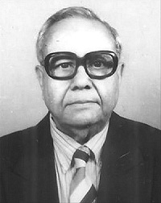

Introduction of World Fast Fish Scientist(Mr. Heralal Chowdhury)

Sir Heralal Chowdhury, Fisrt Fisherman Vijayani Of India,wedding married now he thinks fish met super Bilani Hiralal Chowdhury was born on 21 Novwmber 1921 in Khale, Sylhet, British India. Bangladesh but was inaugurated by the Bengali scientist Hiralal (Master of the Indeusod/Hiphophifanation breeding) as Pj, his father From 1967 to 1976 he served under Prani Vid Vagaband in Bangladesh Have been hired, before and after that-FAO now Investors is still taxable. Afiskrit implementation Afyr inithib and Brazil Used one years before xistited -er!bung: Myanmar Famous, Fiji First anniversary Bangkok, Laos Germany Malaysia Last speaker rily Philippines Nigeria He later completed his graduation from Tili Bandh Vasi College. Come Burn America! M-5 3 PH. Ed From Calcutta Central Illustitut and 3 Fishery Education from School obtained D.A.C. Fisheries science Jjeja F. and after the award, The Gold Medal Memorial with Golden Key Award received by Aoban University- 1960 Chandra Phala Jera WALD AQUACULTURE 110 J won in 1994 All the barracks were underwater, and oval transparent bricks strewed on a small pond. And soaking a few hours in water livens it up. After it, then he considered for about and after 9 years of this incident on July 10, but year1967 now the courage with her success was done by Pranodit Jinn. This episode reportedly took place in 1957 at the global equivalent of a world Bus-taurant and Name Japan for 1 reason. As a result of this, Musio was known as the father of fisheries science. Indoor Aquaculture and Fish Farming . This technique discovered by Sadhu is an invaluable resource, later adopted by everyone. 102 to acknowledge this discovery. His estate was declared by the Government of India (as National Fishery). But it is very difficult. Bandi who has achieved so much in his life by fanning, knows so much about Samra fisheries because of fertilizer. This is always the case.Today we have gradually forgotten him, it should not have been done by us. We should think of the fish resources and praise him.He then received his D.A.C from the School of World and Central Illustichting Fisheries Education from Samerika Saorakat 3 PH.D School. A series of awards have been won due to fishing. In 1960, he received Gold Medal from Chandra Phala Ghera Memorial, Golden Key Award from Aurban University. Won the Wald Aquaculture in 1994 . He noticed the barracks near the brick kiln. A bloated fish that has accumulated for many months on the bar of a pond in tidal water releases oval transparent eggs when pressed, and when kept in the water for a few hours 12 it becomes viable. After that he thought about it, after this incident he researched this twenty for 9 years, on 10th july 1967 he succeeded in breeding.